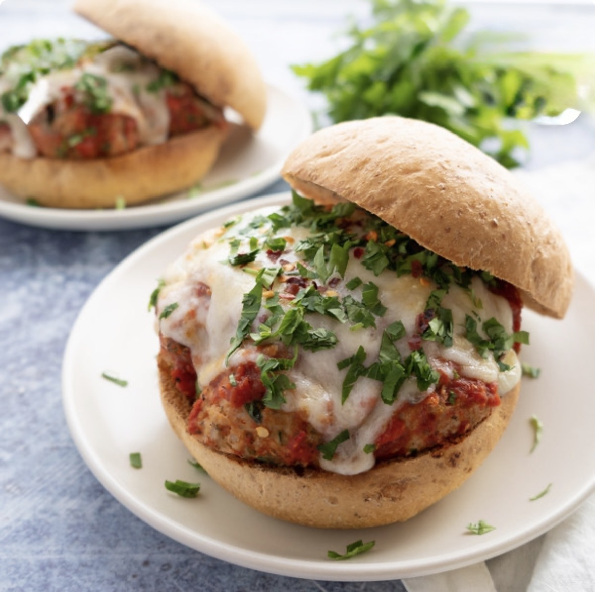

Ingredients
- 1 lbs ground turkey
- 1/4 cup plain bread crumbs
- 1/2 onion, finely diced
- 1 egg
- 1/4 cup chopped fresh parsley
- 2 cloves garlic, pressed
- 2 tsp Italian seasoning
- 1 tsp salt
- 1/2 tsp ground pepper
- 1/4 tsp red pepper flakes
- 3 tbsp freshly grated parmesan cheese
- 1 tbsp olive oil
- 1 tbsp milk
- 4 sub rolls 6 inch
- 4 tbsp butter
- 1 tsp garlic salt
- 1 cup marinara sauce
- 1 cup mozzarella cheese
- Chopped parsley for garnish optional
Instructions
- Preheat oven to 375˚F.
- Combine the bread crumbs, salt, pepper, red pepper flakes, and Italian seasoning in a large bowl, then add the parmesan, eggs, onion, parsley, garlic. Pour in the milk and olive oil and mix to combine. Let sit for 5 minutes so that the dry ingredients start to soak up the wet ingredients.
- Add the ground turkey into the mixture and work it in until it is evenly mixed. You might need to use your hands.
- Form the turkey mixture into 2 inch balls.
- Place the meatballs evenly spaced on a greased cookie sheet. Bake for 25-35 minutes or until cooked through (internal temp of 165˚F)
- Cut the sub rolls in half. Spread 1 tbsp butter, 1/4 tsp garlic salt, and a sprinkle of mozzarella on each roll. Place them in the oven on high broil for 2-4 minutes or until the the cheese is melted and the edges of the bread are browned.
- Place a spoonful of sauce on the bottom of each bun, then place 4 meatballs on each bun, spoon 1/4 of the remaining sauce over the meatballs, and top the sandwich with 1/4 of the remaining cheese.
- Bake at 350˚F for 10-15 minutes or until the cheese is melted and the sandwich is heated through.
- Garnish with parsley and serve hot with extra marinara for dipping. Enjoy!